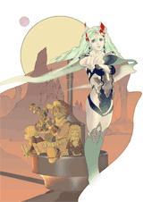

Durch Auswahl von „Purchase Add-On Content“ (Zusatzinhalte erwerben) im Titelmenü können zusätzliche Inhalte (die im Folgenden „Geschichten“ genannt werden) erworben werden.
Zum Erwerb von Zusatzinhalten werden Wii Points (müssen gesondert gekauft werden) benötigt.
● Der Bildschirm „Purchase Add-On Content“ (Zusatzinhalte erwerben)
Hier kannst du aus einer Liste die Geschichte auswählen, die du gerne kaufen möchtest. Außerdem kannst du Einzelheiten wie die Beschreibung der ausgewählten Geschichte, deine aktuellen Wii Points, die Anzahl der zum Kauf der ausgewählten Geschichte benötigten Wii Points und die Anzahl der benötigten Blöcke einsehen. Wähle „Yes“ (Ja), um den Kauf abzuschließen.
Wenn deine Wii-Konsole nicht über ausreichend freien Speicher verfügt ...
Um die zusätzlichen Geschichten speichern zu können, musst du ausreichend freie Blöcke auf deiner Wii-Konsole zur Verfügung haben (die genaue Anzahl benötigter Blöcke findet sich unten neben den jeweiligen Geschichten). Wenn nicht genügend Speicher frei ist, lösche bitte Daten oder verschiebe sie auf eine SD Card im Datenverwaltungsbildschirm (weitere Informationen findest du in der Wii-Bedienungsanleitung unter „Kanäle und Einstellungen“).
Wenn du nicht über ausreichend Wii Points verfügst ...
Bitte besuche für weitere Informationen zum Erwerb von Wii Points den Wii-Shop-Kanal oder die Nintendo-Homepage.
● Heruntergeladene Geschichten löschen
Du kannst heruntergeladene Geschichten über den Datenverwaltungsbildschirm löschen (weitere Informationen findest du in der Wii-Bedienungsanleitung unter „Kanäle und Einstellungen“).
● „Story Outline“ (Geschichtenbeschreibung)
 |
|
 |
„Rydia's Tale“ (Rydias Geschichte) „The Eidolons Shackled“ (Die Gefangenschaft der Beschwörbaren)
Verfügbar: 05.06.2009
Wii Points: 300 Wii Points
Benötigte Blöcke: 5 Blöcke
|
 |

Als Rydia in ihre zweite Heimat, ins Land der Beschwörbaren („The Feymarch“), zurückkehrt, findet sie eine kalte und abweisende Königin vor. Plötzlich erstarren der König der Beschwörbaren („Eidolon King“) und all seine Untertanen, als wären sie in Stein verwandelt worden. Zusammen mit Luca, der Tochter des Zwergenkönigs („Dwarven King“), macht sich Rydia zur Zwergenburg („Dwarven Castle“) auf, um der Sache auf den Grund zu gehen.
|
 |
 |
 |
 |
|
|
|